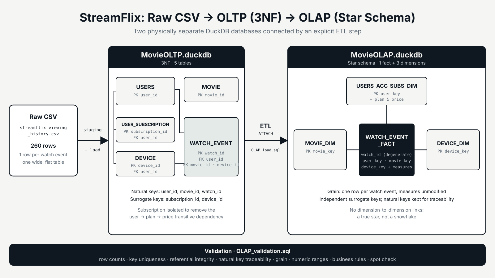
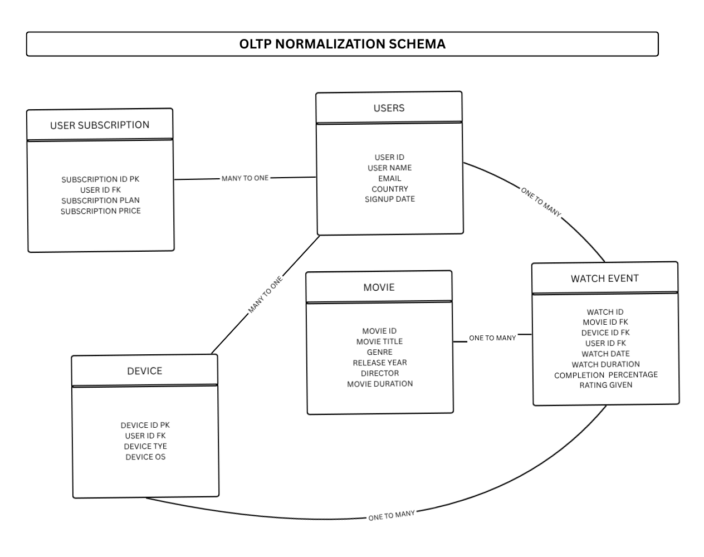
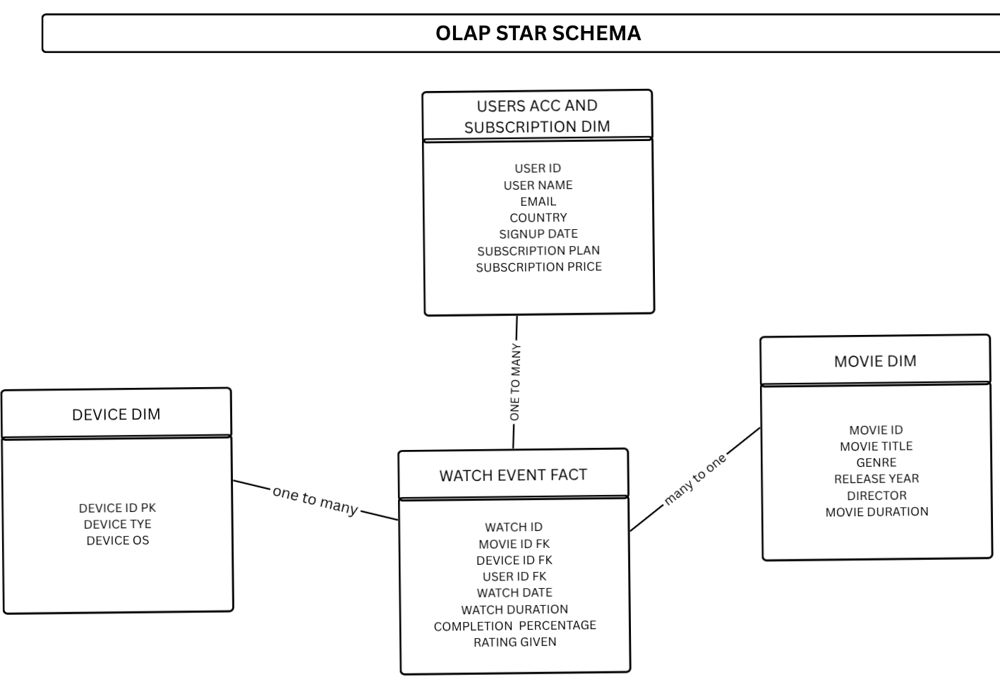

Overview
A denormalized streaming history carried through the full data engineering lifecycle, ending in a warehouse built for analysis.
The project covers functional dependency analysis, normalization into an OLTP schema, and transformation into a star schema. It keeps two physically separate databases, MovieOLTP and MovieOLAP, connected by an explicit ETL step that reads from one and writes into the other.
Problem & goals
The source file, streamflix_viewing_history.csv, is a single wide table of 260 rows at the grain of one row per watch event. It mixes user account details, subscription plan, device information, movie metadata, and the specifics of each watch, all repeated across every row for a given user or movie.
- Normalize to 3NF. Analyze what every column determines, then split the data into five entities, including isolating the hidden
user → subscription_plan → subscription_pricetransitive dependency. - Keep OLTP and OLAP physically separate. Maintain MovieOLTP and MovieOLAP as two DuckDB database files, linked only by an explicit ETL step.
- Build a true star schema. One fact table and three dimensions, preserving the watch-event grain and traceability back to OLTP.
Approach
Step one: Analyze & sketch
Every column was checked for what it determines before any table was drawn. Both the OLTP ERD and the OLAP star schema were then sketched by hand in Canva and iterated until stable, before any SQL was written.
Step two: Build the OLTP database
The raw CSV is staged as-is with
read_csv_auto, then loaded into five normalized tables (USERS, USER_SUBSCRIPTION, MOVIE, DEVICE, WATCH_EVENT) withINSERT INTO ... SELECT DISTINCT, in dependency order.Step three: Transform into the OLAP star schema
Dimensions are loaded first from MovieOLTP using DuckDB's
ATTACH. The fact table is loaded last, joining the OLTP watch events to all three dimensions to translate natural keys into OLAP surrogate keys.Step four: Validate
Eight checks cover row counts across the database boundary, surrogate key uniqueness, referential integrity, natural key traceability, grain, numeric ranges, a watch-duration-versus-runtime business rule, and a joined spot-check sample.
Architecture
The OLTP schema holds five entities in 3NF. Natural keys (user_id, movie_id, watch_id) are kept from the source, while surrogate keys (subscription_id, device_id) are generated by sequences for entities with no natural identifier. WATCH_EVENT references USERS, MOVIE, and DEVICE. The OLAP schema folds the subscription into a user dimension (USERS_ACC_SUBS_DIM), keeps MOVIE_DIM and DEVICE_DIM, and gives each dimension its own surrogate key, with watch_id retained on WATCH_EVENT_FACT as a degenerate dimension.

DEVICE_DIM is deliberately not linked to the user dimension, since both keys already sit on the fact table; linking them would turn the star into a snowflake.
Code sample
A simplified version of the fact load: it reads watch events from MovieOLTP across the database boundary and swaps each natural key for its OLAP surrogate key.
-- Fact load: translate OLTP natural keys into OLAP surrogate keys insert into watch_event_fact select w.watch_id, m.movie_key, u.user_key, d.device_key, w.watch_date, w.watch_duration_minutes, w.completion_percentage, w.rating_given from MovieOLTP.watch_event w join movie_dim m on w.movie_id = m.movie_id join users_acc_subs_dim u on w.user_id = u.user_id join device_dim d on w.device_id = d.device_id;
Gallery


What I learned
Sketching both diagrams before writing any SQL caught structural problems cheaply: a missed transitive dependency, a redundant foreign key path on DEVICE, a dimension-to-dimension link that would have made the model a snowflake, and a wrong one-to-one assumption between subscription and device. Real-world cardinality checks mattered as much as the dependency analysis. Keeping the two databases physically separate also made the ETL step explicit, and validating across that boundary showed that nothing was lost or duplicated in transit.